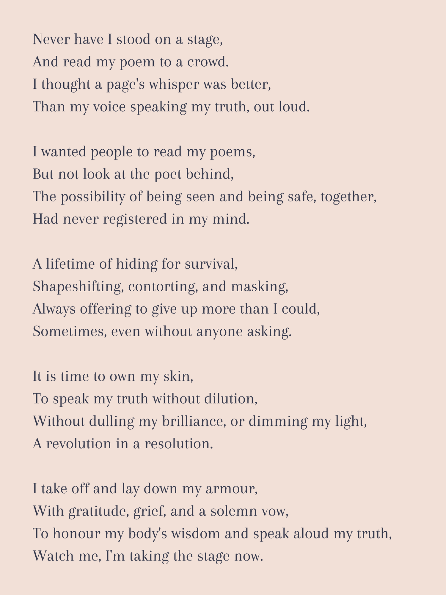
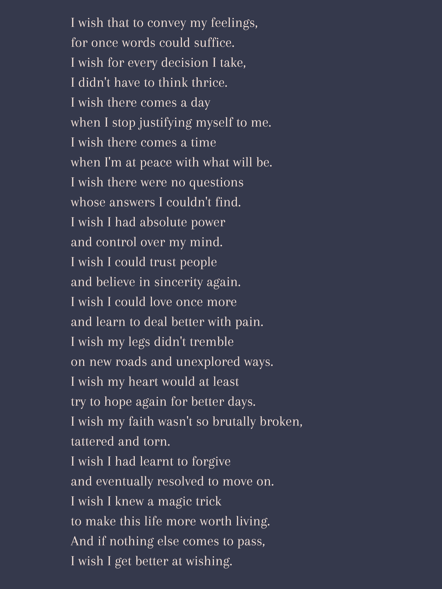
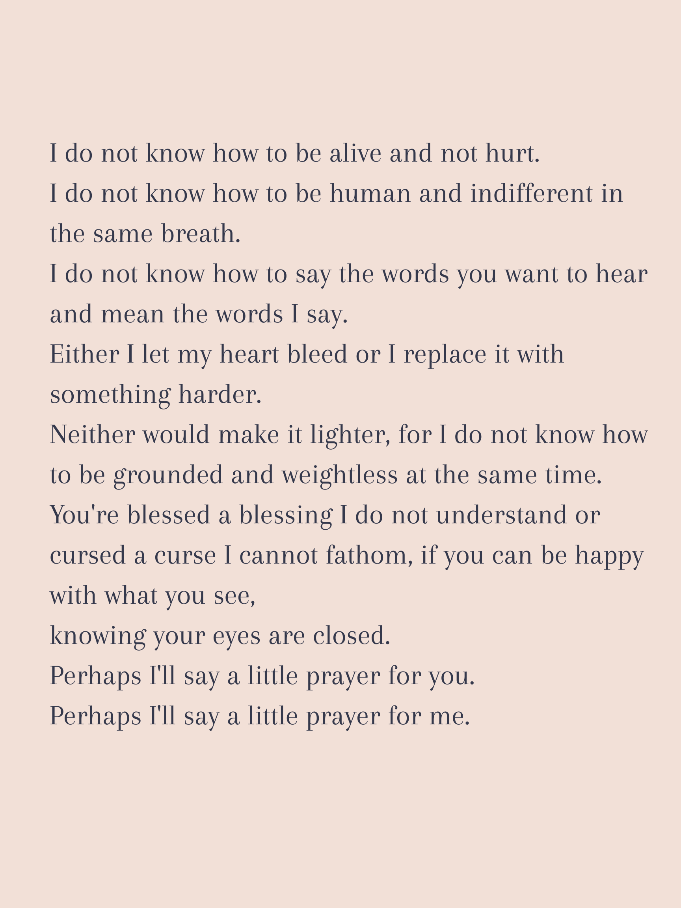
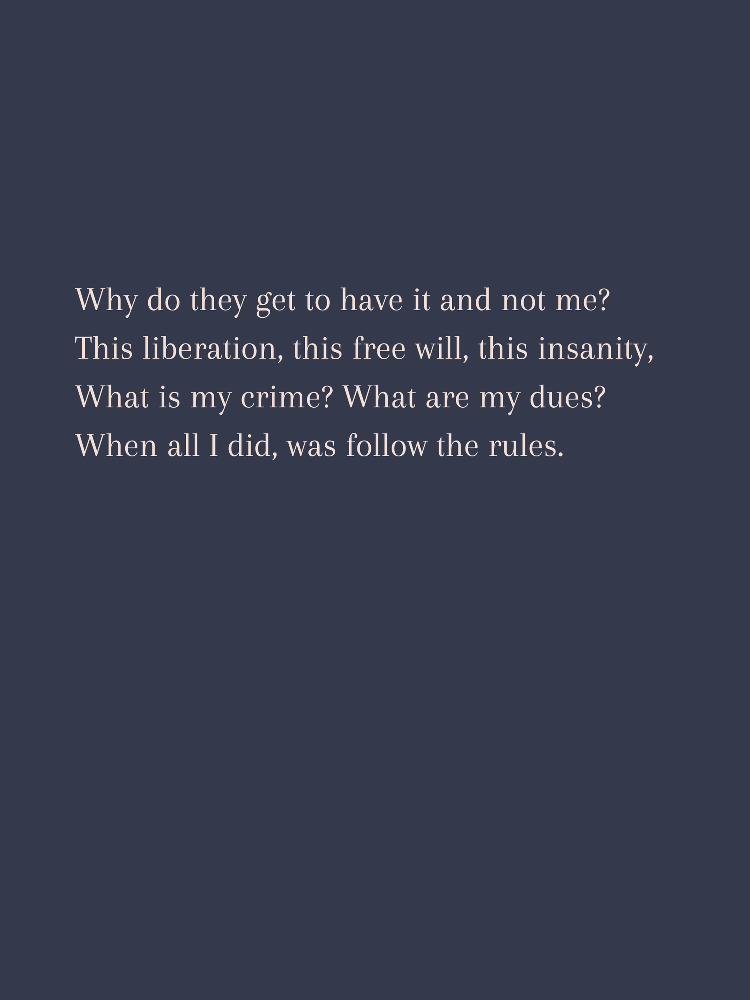

Writing poetry was the first art form I ever practiced and now I'm determined to write more, once again. Here are some short excerpts from different phases of my life. This space will keep on growing, in every sense of the term. I am glad you are here.

Fall, 2025
Written at a park, after it came to me on a walk, the morning of October 14th, 2025.
Exactly two weeks after launching the website on my 37th birthday. A lot of feelings
had been coming up — joy, pride, nervousness, overwhelm, excitement, anxiety.
And while dealing with various, strong, sometimes conflicting feelings, I noticed
how no part of it was doubt. I have never been this sure of the path I have chosen.
It has never felt this aligned with the current.
I am ready to be witnessed in my humanity, not in anyone's definition of perfection,
including my own. I am here for it.

Circa 2011–2013
Written circa 2011–2013. When I read this poem now, I notice the undiagnosed
neurodivergence. It is literally all I see.
Just one more quiet cry for help buried in my journals.

Winter, 2023
Written during the winter of 2023, a couple of months after the Genocide in Gaza started.
The duality of watching it unfold on my phone while also living my life, going to work,
meeting people like nothing was happening messed with my head. No one around was even
ready to engage in conversation about it.
As it continued unchecked, a lot of my illusions of the world were shattered.
I felt insane. Something broke inside me. Something also awakened.

Summer, 2025
Written on September 11th, 2025 after a racist aggression from an old white woman.
For the first time in my life, it didn't stick. Just slid off. Entirely.
After I got over the pleasant surprise of that, I wondered how sad must her life be,
if this is how she chooses to spend her time. She seemed so unhappy and discontent,
packaging her sadness as hate, or so I felt. I sent some good wishes her way
(I know! I'm a whole new person!) and wrote this poem.
Studio dispatches, new poetry, and what's being built. Irregularly but honestly.
Join the circle